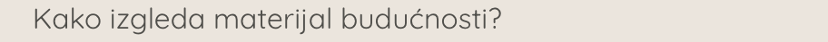

Higijenski? Ekološki? Izdržljiv, a topao?
Želimo što manje vremena provoditi u kuhinji i biti što manje opterećeni čišćenjem.
Svi želimo radnu površinu s posebnim svojstvima kao što su neporoznost,
Dugovječnost te lako čišćenje i održavanje, a opet želimo materijal koji je atraktivan.
Kompoziti su skupina materijala koji se koristi za izradu kuhinjskih radnih ploča,
stolova, ormara, zidnih obloga, umivaonika I sudopera.
Mnogi od njih izgledaju poput kamena.
Kompoziti nastaju od aluminij hidroksida, od veziva akrilne smole i od pigmenata.
Aluminij hidroksid daje im tvrdoću i otpornost na mehanička oštećenja.
Smola ih čini puno lakšima od kamena i termoplastičnim.
Time se omogućuje sloboda u oblikovanju kuhinjske ploče.
Mogu se izraditi neobični oblici i tako očarati novim i drugačijim dizajnom.

Getacore je homogena mineralna sirovina povezana akrilnom smolom,
a sastoji se od aluminij hidroksida kao punila,
poli metil-metakrilata kao veziva i pigmenata, što joj daje izvanredan optički efekt dubine.
Važna karakteristika materijala je ista boja i struktura na obje strane ploče kao i
po presjeku ploče.
Materijal koji očarava jedinstvenom optikom kamena i izvanrednim efektom dubine.
Unatoč optici, vrlo je ugodan na dodir.
Ogrebotine su vidljivije na tamnim i sjajnim površinama zato je preporuka
da na mjestima koja su izložena češćim ogrebotinama (kuhinjska radna ploča, prozorske klupice,
područje blizu sudopera) koristiti svijetle dekore, ali najbitnije je znati da se ploča Getacore-a
može popraviti.
Za sve savjete o popravku najbolje se konzultirati sa stručnom osobom,
stolarom koji je educiran s radom Getacore-a.
Ugrađen u gotovo sve… na sva mjesta….za sve namjene i u širokom spektru
boja pruža slobodu dizajniranja, istraživanja i stvaranja.